1. Identificação
| Projeto / Módulo | CITWEB — módulo Tabelas (Parâmetros → Custo / IOF e Customização) · Nacional → Fechamento Mensal (Emissão · Emissão Especial · Emissão de prêmio mínimo sem averbação · Emissão sem prêmio e sem averbação) · Internacional → Fechamento Mensal · Fatura/consulta de faturas · Integrações que recebem o campo IOF |
|---|---|
| Card | PBI-9120 (Sprint 17 Citweb) · Tag: citweb · Feature pai: #4890 "Reforma tributária - Fase 1" · Sem dev atribuído e sem tasks filhas de dev no momento do plano (13/10) · Task do plano: #9130 |
| O que a entrega inclui | Pela EC 132/2023, as operações de seguro saem da incidência do IOF a partir de 01/01/2027. O PBI: (1) o cadastro de IOF em Tabelas → Parâmetros → Custo/IOF passa a aceitar 0,00 (hoje recusa com "Informar o Percentual de IOF."); (2) com IOF = 0,00, a opção "Cobrar IOF" da tela Customização é desmarcada e bloqueada; (3) com IOF = 0,00, as telas de fechamento (Emissão, Emissão Especial, Emissão de Prêmio mínimo sem averbação, Emissão sem prêmio e sem averbação) não exibem o campo IOF; (4) o IOF deixa de somar no prêmio/fatura; (5) integrações que esperam o campo IOF continuam recebendo-o com valor zero; (6) faturas/fechamentos anteriores preservam os valores registrados; (7) vale para fechamentos de todos os ramos (Nacional e Internacional). |
| Ambiente | HML AXA CITWEB — https://axa-hml-faturamento.nsseg.com.br/Login/ (telas Custo/IOF e Customização validadas in loco em 13/10/2026, build V 1.0.261009.1128; os prints do PO no card foram capturados em AXA STG — QA executa só em HML) · credenciais no .env (HML_AXA_CITWEB_* — nunca neste documento) · Mudança de plataforma (multi-tenant): se o deploy do dev sair em outro tenant, replicar os CTs no tenant do deploy. |
| Ramos | Todos os ramos (declarado no card). O parâmetro IOF é único por tenant (tb_iof_cit tem 1 linha: o_iof) e a Customização é por ramo/produto (combo com 8 ramos). Amostragem do plano: ramo 54 (RCTR-C, Nacional — ramo dos prints do PO) + Internacional (CA exige Nacional E Internacional). Ver Riscos R4. |
| Autor / Data | Wesley Moreira · v1.2 de 15/10/2026 — rodada 1 executada em 15/10/2026 (AXA HML, build CITWEB-HML 20261014.3; contraprova do CT-IOF-011 na V 1.0.261015.1541). Histórico: v1.0 13/10 (shift-left) · v1.1 14/10 (ajustes da entrega, comentários 3448947/3449483). |
2. Descrição
A Emenda Constitucional 132/2023 excluiu as operações de seguro da incidência do IOF (permanece só para crédito, câmbio e títulos/valores mobiliários), com vigência a partir de 2027. Como o PBI de IBS/CBS é separado (PBI-4891), o prêmio faturado a partir da data de corte simplesmente não terá IOF. O mecanismo concreto descrito no card: o percentual de IOF cadastrado no módulo Tabelas passa a aceitar 0,00, e esse valor zero governa o resto do comportamento — a Customização bloqueia "Cobrar IOF" e as telas de fechamento ocultam o campo. Integrações continuam recebendo o campo IOF zerado (não nulo/ausente) para não quebrar contrato, e o histórico já emitido não é recalculado.
features/Tabelas/Parametros/customizacao-custo-iof.md): menu do módulo Tabelas → PARÂMETROS = Customização · Custo / IOF · Taxa de Juros · Seguradoras. Tela Custo/IOF: grupo Custo (Percentual, Valor de Custo, Faixa de Prêmio Inicial/Final) + grupo IOF (Percentual), botões Novo/Salvar/Excluir, grid de faixas. Tela Customização: Ramo + Produto, Códigos SUSEP, seção "Dados para Emissão de Conta Mensal" com Moeda Corrente e Moeda Estrangeira, cada uma com Cobrar Custo / Cobrar Juros / Cobrar IOF / Prêmio Manutenção + Nº de Dias Limite para Vencimento. Baseline atual: IOF vigente = 7,38%; no ramo 54/2-RCTR-C o checkbox "Cobrar IOF" está desmarcado porém HABILITADO (livre) — a entrega muda isto quando IOF = 0,00.tb_iof_cit = 1 linha, sem data). Se o controle da extinção for exclusivamente operacional (alguém zera o IOF em Tabelas na virada de 2027), o grupo 7 (CT-IOF-016) vira N/A e os demais CTs cobrem o card por completo; se a entrega implementar controle por data, o CT-IOF-016 executa. Este plano cobre as duas hipóteses sem depender da decisão.3. Escopo
In scope
- Tabelas → Parâmetros → Custo/IOF: aceite de IOF = 0,00 (mudança central) + regressão do aceite de valor > 0
- Tabelas → Parâmetros → Customização: "Cobrar IOF" desmarcado e bloqueado quando IOF = 0,00 (Moeda Corrente e Estrangeira); remoção de seleção pré-existente; contraprova com IOF > 0
- Fechamento Mensal Nacional — Emissão, Emissão Especial, Emissão de prêmio mínimo sem averbação, Emissão sem prêmio e sem averbação: campo IOF oculto e prêmio total sem parcela de IOF
- Fechamento Mensal Internacional — Emissão (CA exige a mudança em todos os fechamentos, "não só o Internacional")
- Fatura: nova emissão sem IOF no total; preservação do histórico de faturas/fechamentos anteriores
- Integrações: campo IOF presente com valor zero nos registros gerados (oráculo de banco)
Out of scope
- CAs técnicos (DoD de engenharia) — testes unitários, Sonar, 2 aprovadores no PR, homologação em staging: garantidos por branch policy + DoD do dev e pelo fluxo pós-HML; não geram CT
- Inclusão de IBS/CBS/IS — PBI-4891 (card próprio na mesma sprint, plano próprio)
- CIT/CITNET e relatórios de outros cards da Feature #4890
- Produção (QA não testa em PROD) e staging (verificação de Produtos)
4. Pré-requisitos
- DoD do dev cumprido (14/10): card em Em homologação — build
CITWEB-HML 20261014.3(branch hml, PR 2115) publicado nos HML de AIG, AXA, STARR e TOKIO; na tela a versão aparece comoV 1.0.261014.hhmm— conferir o rodapé antes de executar (branches*_fixNÃO receberam o fix). ⚠️ Ponto de operação (dev):tb_iof_citnão tem vigência — fechamentos de competências ≤ 12/2026 devem ser concluídos ANTES de zerar o IOF. - Ambiente: HML AXA CITWEB — login por clique em
/Login/(Usuário + Senha + botão Acessar), tile Tabelas abre em nova aba (fechar aba duplicada quando ocorrer). Credenciais via.env. - Massa (medida em 13/10/2026 — tela + SQL somente leitura, base
smt-hom-citweb-axa): IOF vigente 7,38% (tb_iof_cit.o_iof = 7.38; grid Custo/IOF com faixa única 0,00 → 1.000.000.000.000.000,00 · % Custo 7,38) · Customização ramo 54 / produto 2-RCTR-C / SUSEP 3006004646: Moeda Corrente com Cobrar Custo = S, Cobrar Juros = S, Cobrar IOF = N (habilitado), 30 dias p/ vencimento (tb_prm_cit). - Massa de fechamento: apólice ramo 54 vigente com averbação aberta na competência do teste — localizar via Nacional → Relatórios → Relação de Apólices + Fechamento Mensal → Prévia; se não houver, criar averbação própria (feature
features/averbacao/). Não há emissão com IOF > 0 na base AXA hoje (tb_ems_prpsemv_iof > 0) — a baseline histórica do CT-IOF-012 é construída na execução, emitindo uma fatura com IOF 7,38% ANTES de zerar o parâmetro. - Cotação de moeda (só CT-IOF-015): câmbio USD (código 220) do mês em Tabelas → Cadastros → Cotações de Moeda.
- Oráculos de banco (corrigidos pelo dev em 14/10, comentário 3448947): parâmetro
tb_iof_cit.o_iof· Customizaçãotb_prm_cit.i_cbr_iof_cme(só grava ao Salvar a Customização) · fechamento:tb_cme_cit.v_iof(conta mensal, não aceita NULL) copiado paratb_hst_cit.v_iof— usar apenasv_iof(colunas o_iof/i_iof_cme não existem nessas tabelas) ·tb_ems_prpNÃO é gravada pelo CITWEB (verificação extra opcional) · integrações (WSFatura,tb_brz_cit_fatura) NÃO foram alteradas nesta entrega — recebem o IOF 0 vindo do fechamento.
Ind_VencFat e Ind_CalcEnc estão desligados (Emissão, Prêmio Mínimo e Liberação de Prévia, Nacional e Internacional) — verificação coberta na sessão exploratória. Armadilha de navegação (pré-existente): ir de Emissão Especial para Prêmio Mínimo/Sem Prêmio pode dar "Ocorreu um erro inesperado" (sessão da tela anterior) — clicar em NOVO antes de trocar de tela.5. Casos de Teste
Pré-condições
- HML AXA CITWEB; feature entregue (card em homologação).
- Baseline registrada: IOF atual 7,38% (screenshot do grid +
SELECT o_iof FROM tb_iof_cit).
Passos
- Login → tile Tabelas (nova aba) → menu PARÂMETROS → Custo / IOF.
- No grupo IOF, limpar o campo Percentual e digitar 0,00.
- Clicar em Salvar.
- Capturar a mensagem exibida (comportamento atual, pré-fix: vermelha "Informar o Percentual de IOF." — print do PO no card).
- Recarregar a tela (menu PARÂMETROS → Custo / IOF) e conferir o valor exibido no grupo IOF.
- Conferir a persistência no banco:
SELECT o_iof FROM tb_iof_cit(esperado 0.00).
Resultado esperado
- Salvar com IOF = 0,00 é aceito, com a mensagem de sucesso “Custo / IOF atualizado com sucesso!” — a validação "Informar o Percentual de IOF." não dispara mais para 0,00.
- Valor 0,00 persistido: tela após recarregar +
tb_iof_cit.o_iof = 0. Nota do dev (14/10): após gravar, o campo pode exibir 0 em vez de 0,00 — apenas exibição; o valor no banco é 0.
tb_iof_cit.o_iof 7.38→0.0 (transição provada).
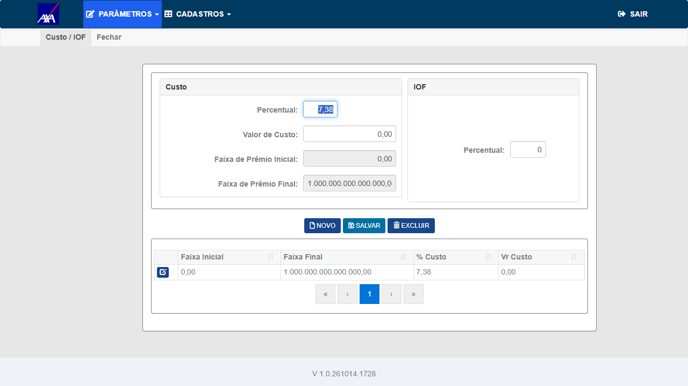
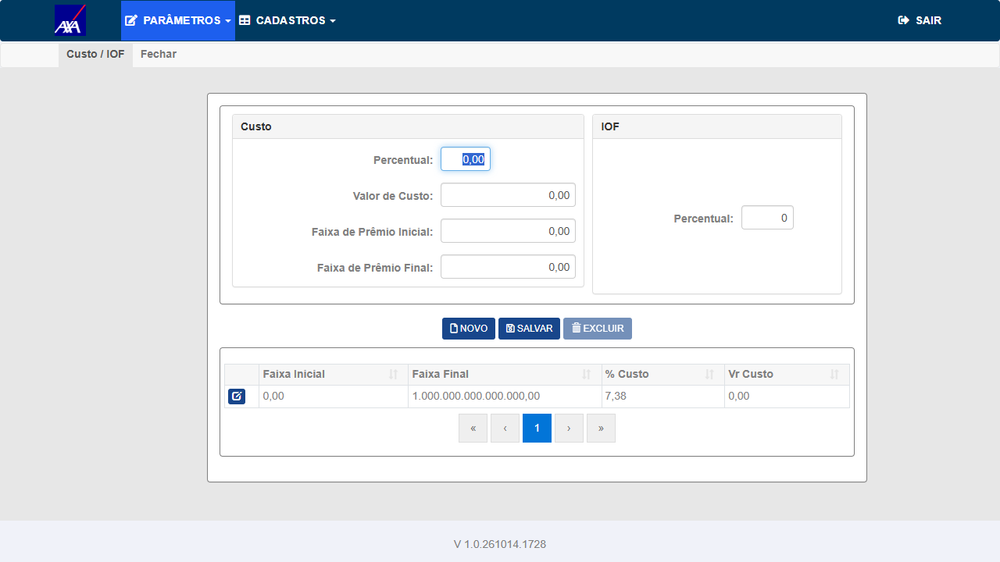
Pré-condições
- Tela Custo/IOF acessível (mesma navegação do CT-IOF-001).
Passos
- Na tela Custo / IOF, informar 7,38 no Percentual do grupo IOF.
- Clicar em Salvar → capturar a mensagem de sucesso.
- Recarregar e conferir o valor na tela; conferir
tb_iof_cit.o_iof = 7.38.
Resultado esperado
- Comportamento atual 100% preservado para valores > 0: salva, mensagem de sucesso, persistência em tela e banco.
o_iof=7.38. Nuance registrada: salvar com o grupo Custo zerado dispara “Informar o Percentual ou o Valor do Custo.” (tela grava Custo+IOF juntos) — resolvido selecionando a faixa do grid antes de salvar.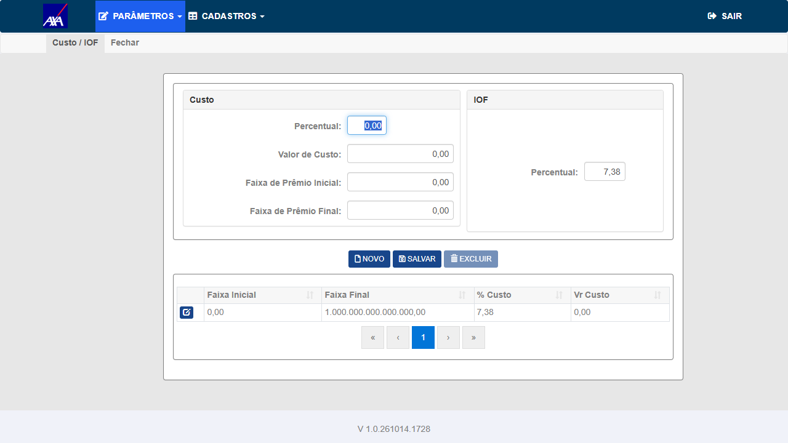


Pré-condições
- Tela Custo/IOF acessível.
Passos
- Limpar completamente o campo Percentual do grupo IOF (deixar vazio, não 0,00).
- Clicar em Salvar e capturar o comportamento (mensagem/normalização).
Resultado esperado
- Tratamento controlado: ou a validação "Informar o Percentual de IOF." permanece para campo vazio (vazio ≠ 0,00), ou o sistema normaliza para 0,00 — nunca erro de servidor/500. O card não define qual das duas; registrar o comportamento observado e confirmar a intenção (ver Riscos R3). [v1.3: restaurado o texto da v1.0, aprovado por Produtos no Gate 2 — a v1.1 o havia trocado pela observação do dev (comentário 3448947), que não é oráculo de Produtos. A observação do dev — “bloqueada pela validação padrão” — fica registrada como divergência.]
tb_iof_cit.o_iof 7,38 → 0,0 e a tela recarregada mostra 0 — sem erro de servidor. Isto é o ramo “o sistema normaliza para 0,00” do contrato v1.0 → APROVADO (a rodada 1 reprovou comparando com a observação do dev, que não é critério de Produtos). Divergência registrada: o dev declarou que um campo vazio seria bloqueado pela validação padrão; não é o que ocorre. Risco R3 (zerar o IOF global por engano ao apagar o campo) confirmado e escalado ao trio para Produtos confirmar a intenção (vazio ≡ 0,00 aceito, ou exigir bloqueio) — não bloqueia o card. Parâmetro restaurado a 7,38 ao final (SQL no arquivo _09).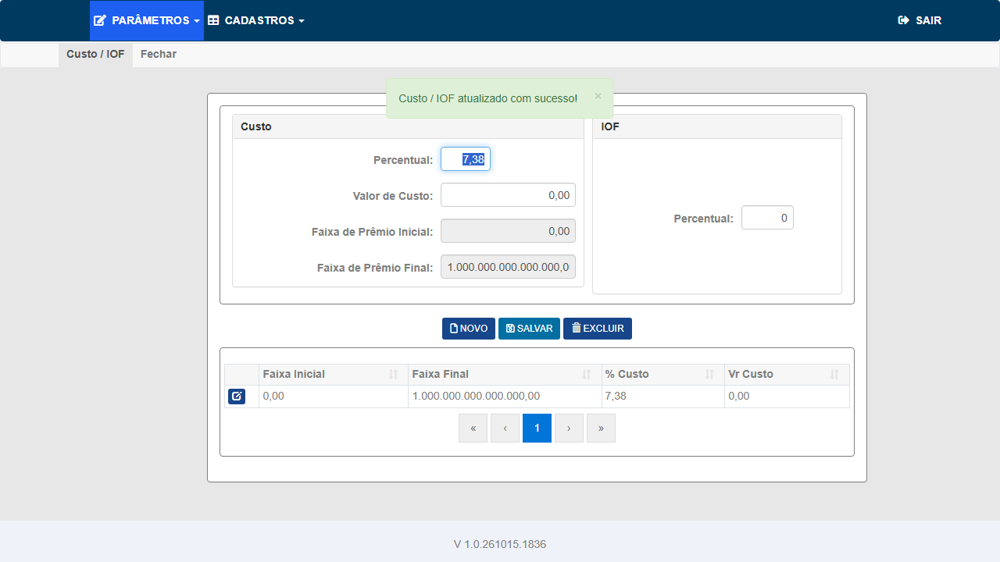

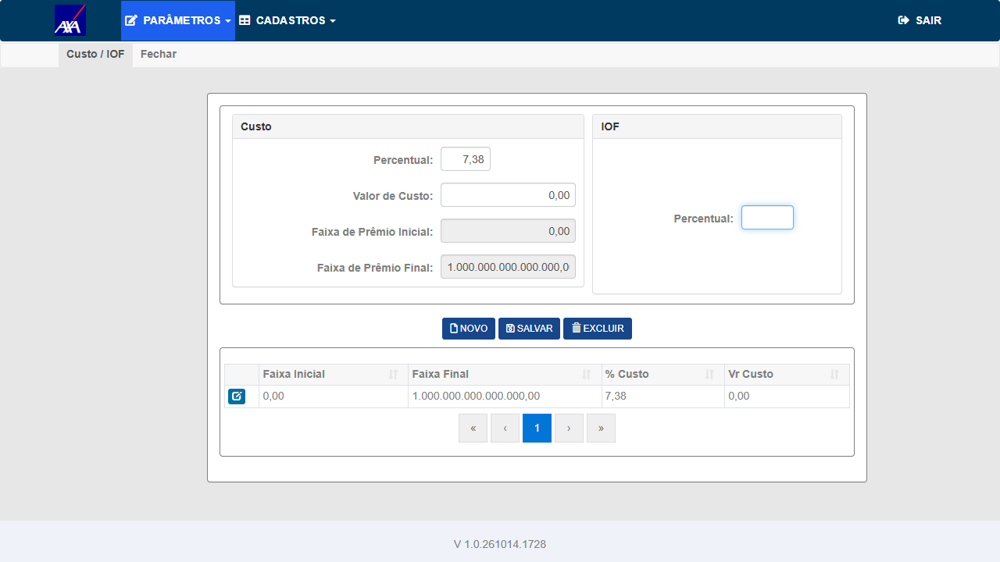

Pré-condições
- CT-IOF-001 aprovado (IOF = 0,00 salvo em Custo/IOF).
- Baseline 13/10 (IOF 7,38%): no ramo 54/2-RCTR-C o checkbox está desmarcado e habilitado (livre).
Passos
- Menu PARÂMETROS → Customização.
- Selecionar Ramo RESPONSABILIDADE CIVIL TRANSPORTADOR RODOVIÁRIO - CARGA (54) → Produto 2-RCTR-C (auto-carrega; SUSEP 3006004646).
- Na seção "Dados para Emissão de Conta Mensal", inspecionar o checkbox Cobrar IOF da Moeda Corrente: estado marcado/desmarcado e habilitado/desabilitado (atributo
disabledvia evaluate + tentativa de clique). - Repetir a inspeção na coluna Moeda Estrangeira (quando habilitada para o ramo).
- Tentar marcar o checkbox e clicar em Salvar — confirmar que a seleção não é possível.
Resultado esperado
- "Cobrar IOF" desmarcado e bloqueado (não clicável) nas duas moedas enquanto IOF = 0,00 — o usuário não consegue selecionar.
- Oráculo: estado do elemento na tela (disabled + unchecked) + screenshot; contraste com a baseline de 13/10 (habilitado).
indCobrarIofMoedaCorrente = unchecked + disabled no DOM; clique executado e permaneceu desmarcado; Moeda Estrangeira idem (toda desabilitada, baseline sem parametrização); Cobrar Custo/Juros seguem habilitados — bloqueio específico do IOF.
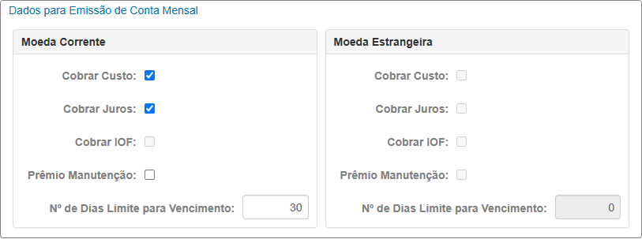
Pré-condições
- IOF > 0 em Custo/IOF (ex.: 7,38 — restaurar antes deste CT se necessário).
- Ramo com "Cobrar IOF" marcado e salvo: na Customização do ramo 54/2-RCTR-C, marcar Cobrar IOF (Moeda Corrente) → Salvar → conferir
tb_prm_cit.i_cbr_iof_cme = 'S'(hoje 'N').
Passos
- Com a pré-condição montada (Cobrar IOF = S), ir a Custo / IOF e salvar IOF = 0,00.
- Voltar a Customização → ramo 54 → produto 2-RCTR-C.
- Inspecionar o checkbox Cobrar IOF (Moeda Corrente): estado e habilitação (desmarcado + bloqueado na TELA).
- Clicar em Salvar na Customização (ramo 54 / 2-RCTR-C) — ajuste do dev 14/10: zerar o IOF não grava
tb_prm_cit; o 'N' só persiste ao salvar a Customização. - Conferir a persistência no banco:
SELECT i_cbr_iof_cme FROM tb_prm_cit WHERE c_rmo = 54 AND c_pro = 2 AND e_moe_apo = 'N'→ 'N'. (Sem efeito no cálculo: com IOF 0,00 o valor calculado é 0 mesmo com o parâmetro 'S'.)
Resultado esperado
- A seleção anterior é removida (checkbox desmarcado) e o campo fica bloqueado — conforme o card: "deve remover a seleção do menu CUSTOMIZAÇÕES e deixar bloqueado".
- Oráculo: tela (unchecked + disabled) + banco (
i_cbr_iof_cme = 'N').
i_cbr_iof_cme, ramo 54/produto 2/moeda N) — exatamente o ajuste do dev: só o Salvar grava o 'N'.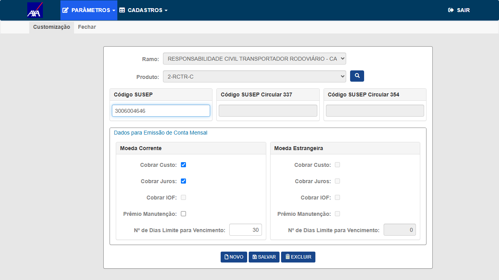

Pré-condições
- CT-IOF-004/005 executados (IOF = 0,00 vigente). Este CT encerra a rodada e restaura a baseline do tenant.
Passos
- Em Custo / IOF, salvar IOF = 7,38 (valor da baseline de 13/10).
- Em Customização → ramo 54 → 2-RCTR-C: inspecionar o checkbox Cobrar IOF.
- Marcar o checkbox → Salvar → capturar mensagem; reabrir e conferir persistência.
- Desmarcar → Salvar → reabrir (devolve a Customização ao estado baseline:
i_cbr_iof_cme = 'N').
Resultado esperado
- Com IOF > 0 o checkbox volta a ser habilitado e selecionável — o bloqueio é condicionado ao valor 0,00, não permanente.
- Oráculo: tela (enabled, seleção persiste após salvar/reabrir) + banco.
o_iof=7.38) → checkbox Cobrar IOF voltou habilitado (disabled removido); marcado+salvo → 'S' persistiu e reabre marcado; desmarcado+salvo → 'N' (baseline devolvida). Bloqueio é condicionado ao 0,00, não permanente.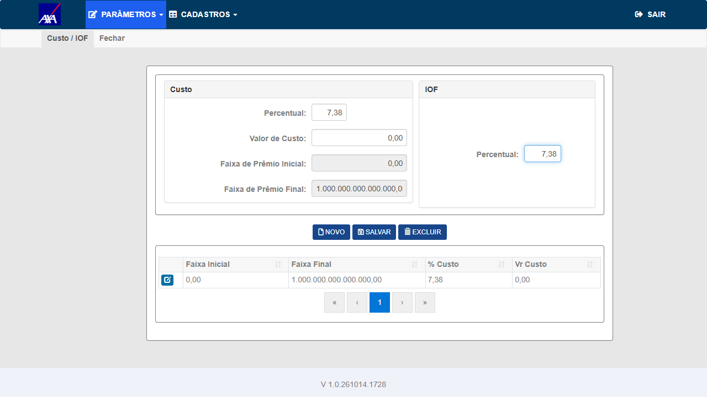
Pré-condições
- IOF = 0,00 vigente (CT-IOF-001).
- Apólice ramo 54 com averbação aberta na competência (localizar via Relação de Apólices + Prévia; criar averbação se necessário — registrar filial/apólice/subgrupo/referência usados).
- Baseline (print do PO no card, pré-fix): o modal exibe "IOF ☑ 0,89" entre Custo e Prêmio Total, com campo Taxa 0,50000.
Passos
- Na aba Nacional → Fechamento Mensal → Emissão.
- Selecionar Filial, Ramo 54, apólice/subgrupo de teste e a Referência (mês/ano) → carregar o grid.
- Abrir o detalhe da emissão (lápis/editar) → modal "Fechamento Mensal" com o bloco "Valores em".
- Inspecionar o bloco de valores: presença/ausência da linha IOF (checkbox + valor) e do campo Taxa de IOF.
- Capturar screenshot do modal completo.
Resultado esperado
- A linha/checkbox IOF não é exibida no modal quando o IOF cadastrado é 0,00 — conforme o card: "nessas telas não exibir o campo IOF".
- Oráculo: ausência do elemento na tela (screenshot + evaluate), contrastada com o print baseline do card.
#divLinhaIOF display:none, hidden IOF=0). O “Taxa 0,50000” visível é a taxa de JUROS (0,5%×30,00=0,15, idêntica ao baseline). Contraste: baseline 05/2026 exibia “IOF ☑ 0,30”.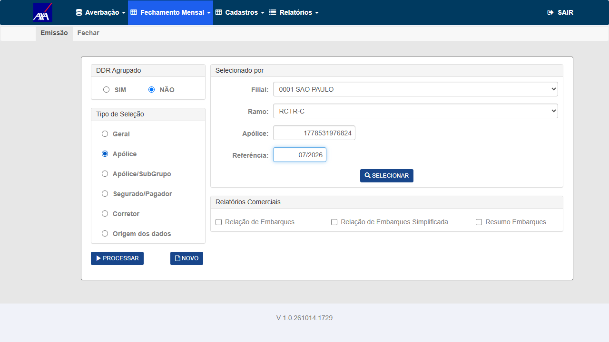
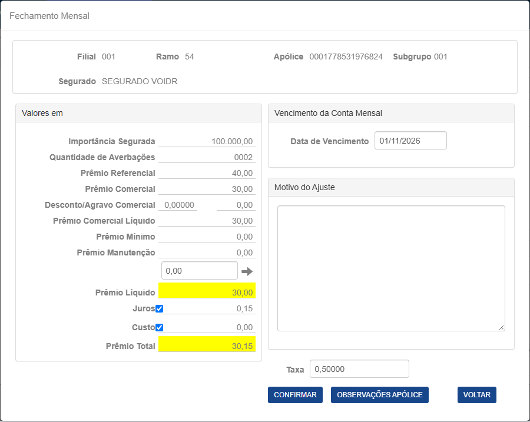
Pré-condições
- Mesmas do CT-IOF-007 (IOF = 0,00; massa ramo 54).
Passos
- Nacional → Fechamento Mensal → Emissão especial.
- Selecionar a mesma massa (filial/ramo/apólice/referência) → abrir o detalhe da emissão.
- Inspecionar o bloco de valores: presença/ausência do campo IOF; screenshot.
Resultado esperado
- Campo IOF não exibido na Emissão Especial com IOF = 0,00.
#divLinhaIOF display:none), sem Taxa de IOF, total 30,15 sem parcela. Desvio de massa registrado: a tela não aceita 11/2026 havendo pendências mais antigas (“Existem Fechamentos não realizados a partir de 01/05/2026… • Período para o Fechamento inválido.”) — inspeção feita com 07/2026 + período até 31/07/2026; 11/2026 permaneceu aberta.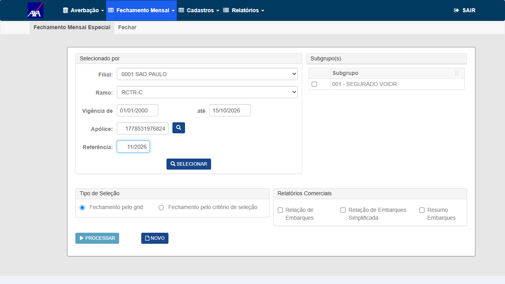
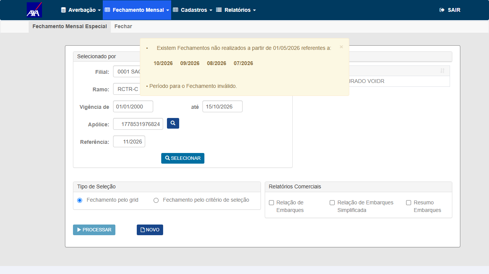
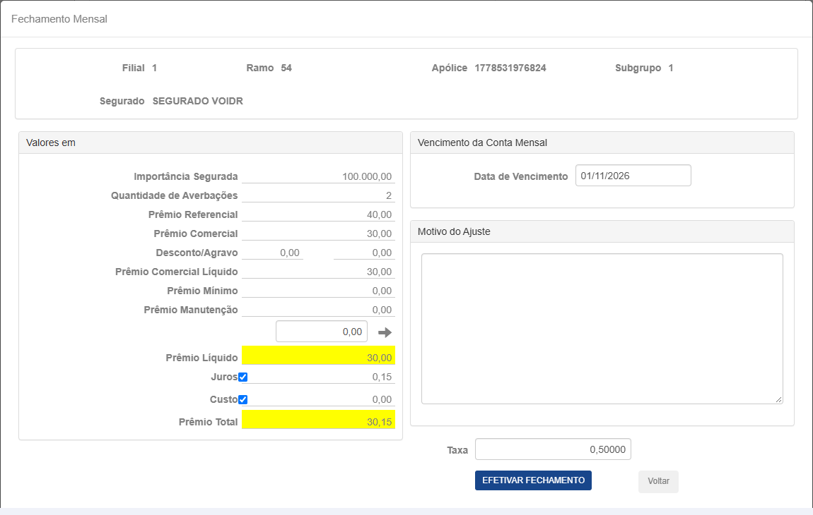
Pré-condições
- IOF = 0,00 vigente.
- Apólice ramo 54 com PMM cadastrado e SEM averbação na competência (pré-requisito da tela de prêmio mínimo) — localizar/ajustar massa via Relação de Apólices.
Passos
- Nacional → Fechamento Mensal → Emissão de prêmio mínimo (tela "Emissão de Prêmio mínimo sem averbação" do card — confirmar label exato do submenu na execução).
- Selecionar a massa e abrir o detalhe da emissão.
- Inspecionar presença/ausência do campo IOF; screenshot.
Resultado esperado
- Campo IOF não exibido com IOF = 0,00; prêmio mínimo calculado sem parcela de IOF.
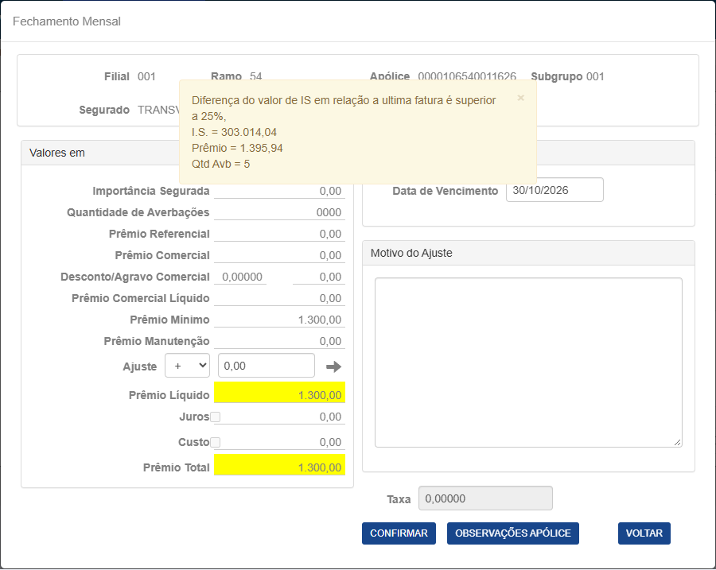
Pré-condições
- IOF = 0,00 vigente.
- Apólice ramo 54 sem prêmio e sem averbação na competência (período sem movimento).
Passos
- Nacional → Fechamento Mensal → submenu da emissão sem prêmio/sem averbação ("Períodos sem movimento" no menu atual — confirmar label exato na execução; o card nomeia "Emissão sem prêmio e sem averbação").
- Selecionar a massa e tentar abrir o detalhe. ⚠️ Na execução de 16/10 esta tela não abre o modal "Fechamento Mensal" (a resposta do servidor chega, mas o JavaScript da tela não a injeta) — defeito de front-end legado, independente do IOF (medido nas duas fases, IOF 7,38 e 0,00 — Bug #9215). A medição prova que o defeito independe do IOF; o caráter pré-existente se apoia no relato da dev (14/10) e na análise do código da tela (o script da tela não faz parte das alterações deste PBI), registrada no Bug #9215.
- Medição substitutiva (o modal não abre pela UI): capturar a resposta do servidor ao pedido do modal com IOF 7,38 e com IOF 0,00 na mesma massa e comparar a linha de IOF.
- Conferir que o grid da tela não exibe coluna/valor de IOF; screenshot.
Resultado esperado
- Com IOF = 0,00, o detalhe da emissão (modal “Fechamento Mensal”) e o grid não exibem o campo IOF.
- [v1.3 — prova estrutural] O passo “abrir o detalhe” não é executável pela UI (Bug #9215). O critério é verificado pelo HTML que o servidor devolve ao pedido do modal: com IOF 7,38 a linha de IOF vem visível; com IOF 0,00 vem oculta (
display:none); o grid não tem coluna de IOF nas duas fases. Produtos pode se opor a este oráculo substituto (ver Riscos R3 / pergunta ao trio).
GET /Nacional/EmissaoSemPremio/FechamentoMensal e o servidor responde 200 (~22,9 KB) com a view completa; o JavaScript da tela não a injeta (#divFechamentoMensal inexistente, sem erro de console) — idêntico com IOF 7,38 e com IOF 0,00, logo é defeito de front-end legado, independente do PBI (Bug #9215). Oráculo substituto (o HTML que o modal exibiria): diferença entre as duas respostas do servidor = só o horário e <div class="row" id="divLinhaIOF"> (IOF 7,38, visível) × <div class="row" id="divLinhaIOF" style="display:none"> (IOF 0,00, oculto) → o critério do PBI (não exibir o campo IOF com IOF 0,00) está atendido nesta tela; a grade também não exibe IOF. Limitação declarada: o passo “abrir o detalhe” da v1.0 não é executável pela UI por causa do defeito legado — Produtos pode se opor a este oráculo substituto.
#divFechamentoMensal NEM EXISTE no DOM — a seleção não abre nada, sem mensagem de erro. O que era verificável foi verificado: grid sem coluna/valor de IOF (coluna técnica oculta e vazia). Massa: 1778531976824, 08/2026 (sem averbação, SQL). Dev abrirá card separado para o modal — pendência de rastreio: o card do dev ainda não existe/não foi linkado ao #9120; cobrança registrada para o comentário de resultado. Não reprova esta entrega.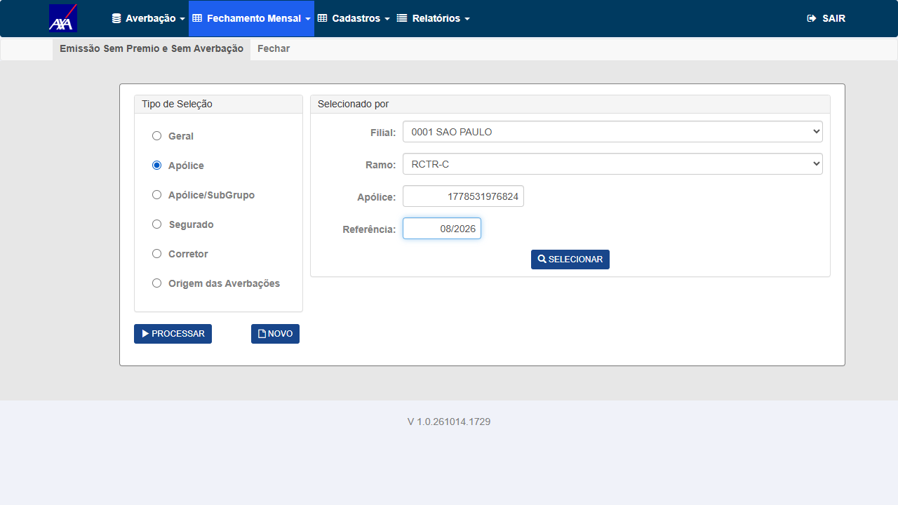
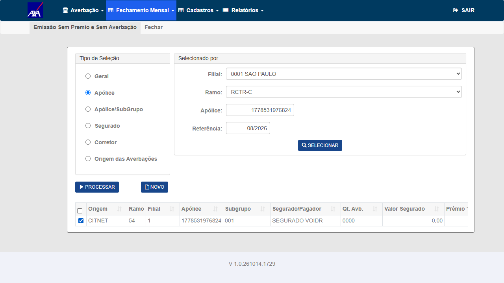
Pré-condições
- CT-IOF-007 em execução (mesmo modal da Emissão, mesma massa).
- Baseline aritmética do print do PO (pré-fix): Prêmio Líquido 12,00 + Juros 0,06 + Custo 0,00 + IOF 0,89 = Prêmio Total 12,95.
Passos
- No modal "Fechamento Mensal" da Emissão (IOF = 0,00), extrair via evaluate os valores: Prêmio Líquido, Juros, Custo e Prêmio Total.
- Somar manualmente os componentes exibidos e comparar com o Prêmio Total.
- Confirmar a emissão (botão Confirmar) e conferir o registro gerado:
SELECT v_iof FROM tb_cme_cit WHERE u_apo_pnc = [apólice de teste] AND [competência](esperado 0, não NULL) e o mesmo emtb_hst_cit— oráculo corrigido pelo dev 14/10 (o CITWEB grava tb_cme_cit e copia p/ tb_hst_cit; tb_ems_prp não é gravada pelo CITWEB).
Resultado esperado
- Prêmio Total = Prêmio Líquido + Juros + Custo (± demais componentes exibidos), sem nenhuma parcela de IOF — a conta fecha exata na tela.
- Registro da emissão com IOF zerado no banco (
tb_cme_cit.v_iof = 0etb_hst_cit.v_iof = 0).
POST /Nacional/Emissao/Processar → HTTP 500, nada gravado. Isolamento: a mesma massa com IOF 7,38 (modal com IOF 2,23, total 32,38) também dá 500 — o erro não depende do IOF; a competência 11/2026 (1 averbação) processa OK com IOF 0,00 (fechamento criado, v_iof 0,0, total 15,08). O reteste inicial de 16/10 (rodada 2a, 1 averbação) não usou a massa do CT e por isso não vale como aprovação: o que na massa de 07/2026 provoca o 500 não foi determinado (com 1 averbação em 11/2026 o Processar funciona) — a investigação é da dev (Task #9214). A massa de 07/2026 foi recomposta por SQL em 16/10 depois de cancelar o fechamento 568 (na rodada 1 estava íntegra e o 500 já ocorria). Origem não determinada (regressão do PBI ou anterior a ele): Task #9214 ao dev. tb_hst_cit: 0 linhas (já registrado no CT-IOF-014). Massa devolvida ao estado livre ao final (IOF restaurado a 7,38).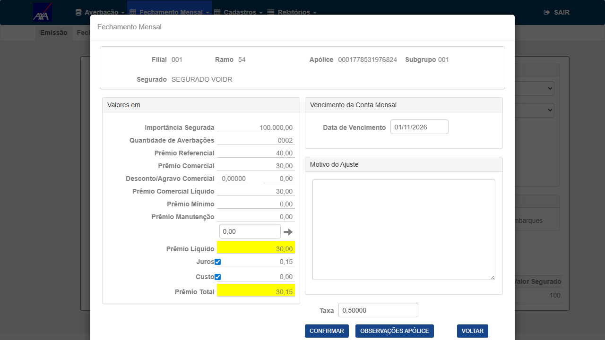

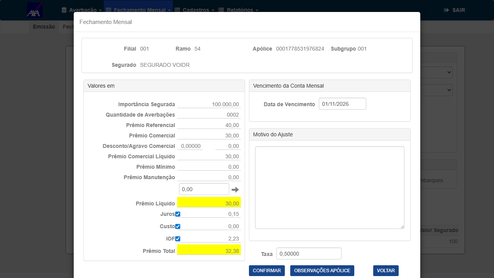
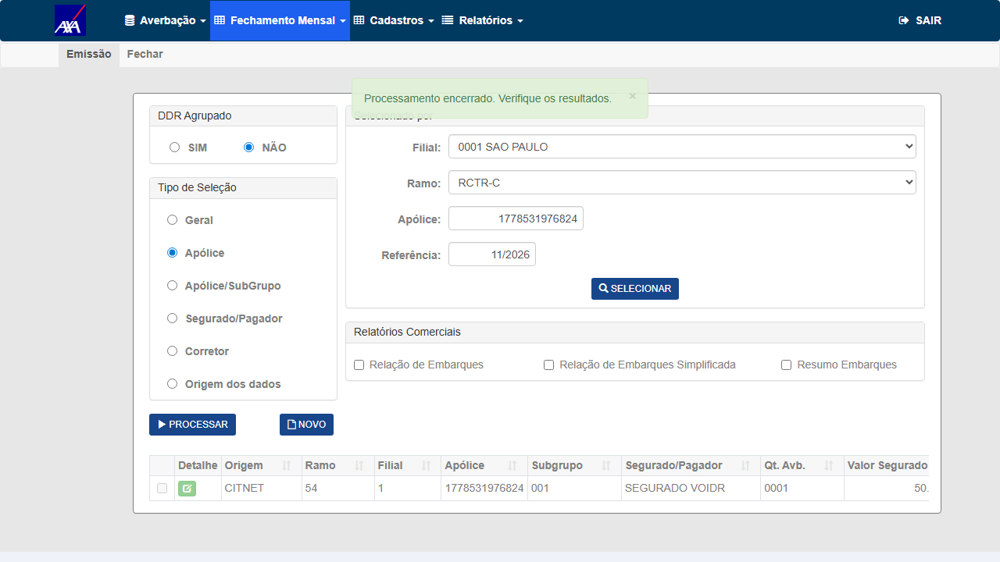
tb_cme_cit.v_iof=0.0, v_pmo_tot=30.15, e 07/2026 saiu dos pendentes. Graylog inacessível da máquina (IPv6) — sem stack trace. Build V 1.0.261014.1729. Blindagem do defeito: (i) a MESMA rota normal processou a baseline 05/2026 às 12:33 (com IOF 7,38) na mesma build/sessão — Processar OK com 7,38 e 500 com 0, 25 min depois; (ii) o problema de sessão PRÉ-EXISTENTE declarado pelo dev (Emissão Especial→Prêmio Mínimo/Sem Prêmio) NÃO se aplica: o caminho executado foi Emissão normal direto, e a Especial só foi usada DEPOIS das 2 tentativas; (iii) contraprova 15/10 em sessão limpa (evidências _08_contraprova_*): login novo → Emissão direto → Processar 11/2026 → SUCESSO (fch 569, v_iof=1,11 = 7,38% exato, total 16,19) — PORÉM em build mais nova (V 1.0.261015.1541, houve deploy entre as execuções) e com IOF 7,38: as variáveis build×IOF-zero não ficaram isoladas. O reteste do defeito deve repetir a via normal com IOF 0,00 na build corrente.
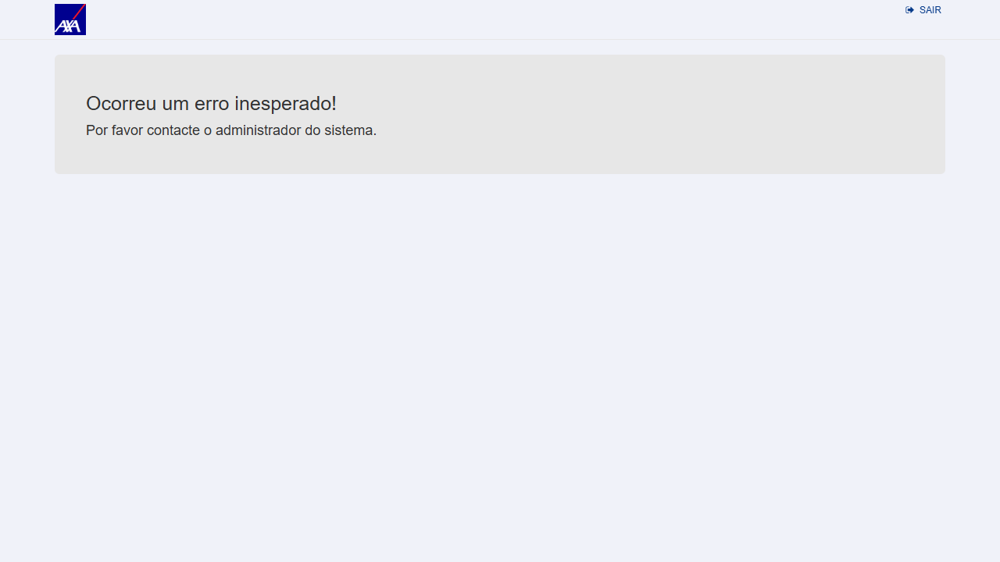

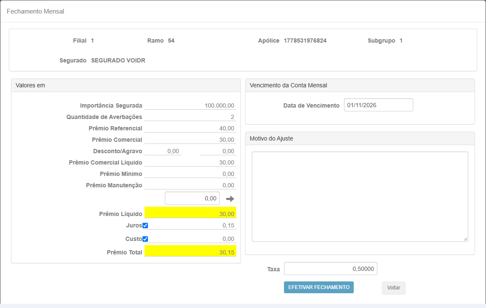
Pré-condições
- ANTES de zerar o IOF (primeiro passo da rodada de execução): com IOF = 7,38%, emitir uma fatura de competência anterior na massa de teste e registrar a baseline — valores da tela/arquivo +
SELECT v_iof FROM tb_hst_cit WHERE [chave da fatura](a base AXA não tem emissão com IOF > 0 hoje; esta baseline é construída na execução).
Passos
- Após os CTs com IOF = 0,00 (grupos 2–3): Nacional → Fechamento Mensal → Consulta faturas (e/ou Impressão para reimprimir o fechamento emitido).
- Localizar a fatura baseline (emitida com IOF 7,38%) e abrir/reimprimir.
- Comparar os valores exibidos/impressos com a baseline registrada (IOF destacado).
- Reconsultar o banco:
tb_hst_cit.v_iofda fatura baseline inalterado.
Resultado esperado
- Fatura histórica idêntica à baseline — IOF original preservado na consulta, na reimpressão e no banco; nenhum recálculo retroativo.
tb_cme_cit.v_iof=0.3) permanece INALTERADA após as emissões com IOF 0 — banco (567: v_iof=0.3/4.32, sem n_usu_alt) e reimpressão (Resumo de Embarques 00567: “IOF: 0,30”, “Prêmio Total: 4,32”) — nenhum recálculo retroativo.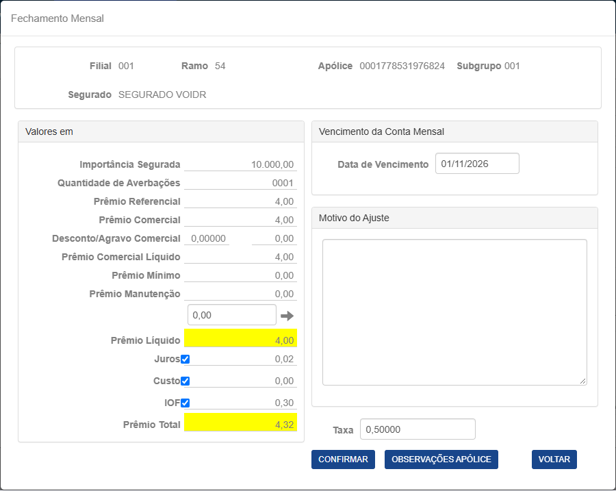
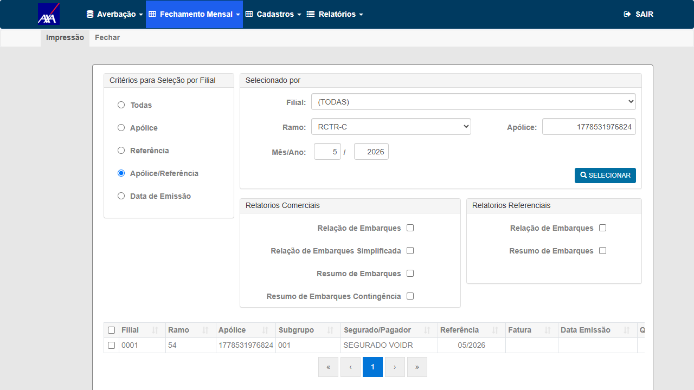
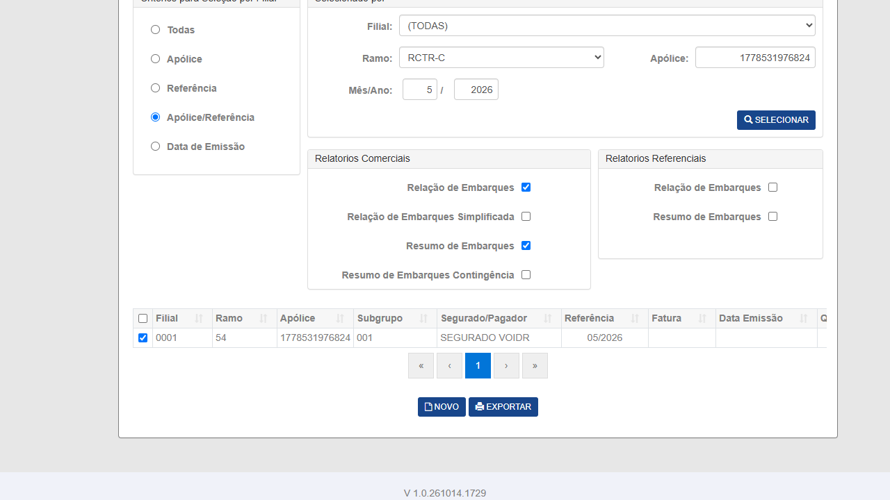
Pré-condições
- Fechamento emitido com IOF = 0,00 (fatura gerada). [Execução: o fechamento usado (568, 07/2026) saiu pela Emissão Especial — a Emissão normal retorna HTTP 500 nessa massa (CT-IOF-011, Task #9214); o documento da fatura é o mesmo.]
Passos
- Após confirmar a emissão, gerar/baixar o relatório do fechamento (Impressão / relatório da emissão).
- Validar o arquivo (não só a tela): tamanho > 0, abrir, localizar os campos de valores.
- Conferir no documento: total da fatura sem parcela de IOF (e campo IOF, se exibido no layout, zerado).
Resultado esperado
- Documento da fatura consistente com a tela: total sem IOF. O arquivo gerado é a evidência (regra: CT de relatório valida o arquivo).
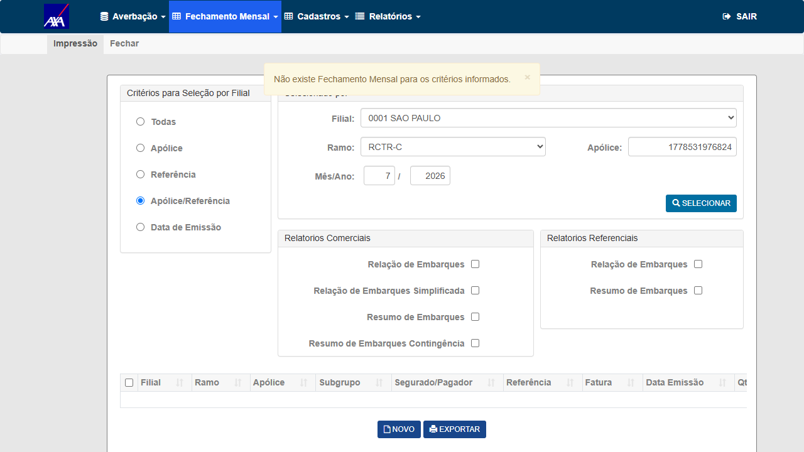
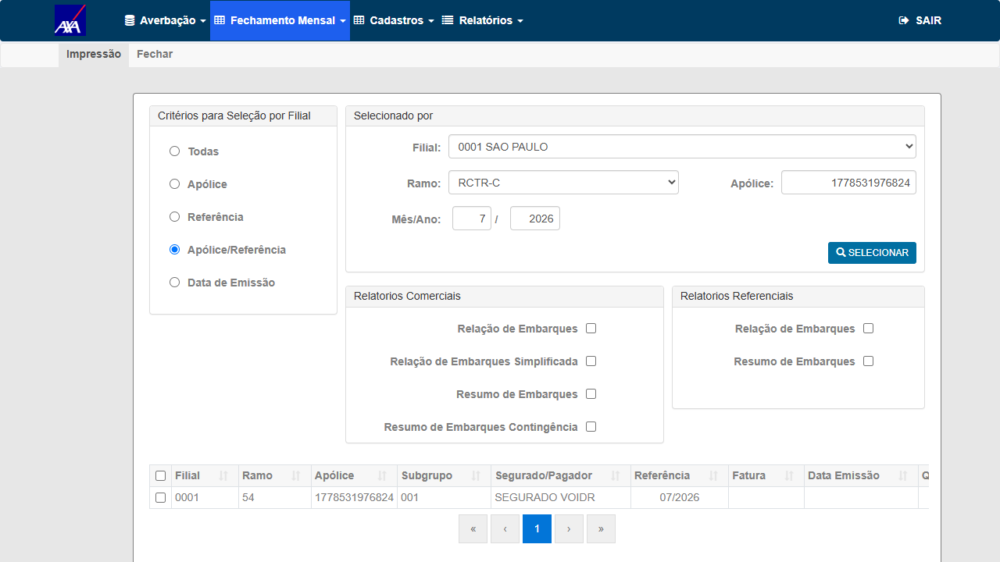
Pré-condições
- Emissão do CT-IOF-011 confirmada (registros gerados com IOF = 0,00).
- Acesso SQL somente leitura à base
smt-hom-citweb-axa.
Passos
- Consultar o registro da emissão:
SELECT v_iof FROM tb_cme_cit WHERE u_apo_pnc = [apólice] AND [competência]— campo presente, valor 0 (a coluna não aceita NULL). - Consultar o histórico gerado:
SELECT v_iof FROM tb_hst_cit WHERE [chave da fatura nova]— valor 0. - Verificação extra (opcional):
tb_ems_prp— depende de processo fora do CITWEB, não é oráculo deste CT. - Integrações específicas: N/A nesta entrega (dev, 14/10): nenhuma integração foi alterada (WSFatura e
tb_brz_cit_faturanão tocadas) — elas recebem o IOF 0 vindo do fechamento; sem artefato próprio a validar.
Resultado esperado
- O campo IOF existe e vale 0 em todos os registros/contratos gerados após a mudança — nenhuma integração quebra por campo ausente/nulo (CA: "continuar recebendo-o com valor zero").
- Oráculo: estado do banco (nunca "não deu erro").
tb_cme_cit 202607 → v_iof = 0.0 (ZERO gravado, não NULL — nota: a coluna é nullable por schema, IS_NULLABLE=YES no dump; o que o CA exige é o valor 0 gravado, e está), v_pmo_tot=30.15. tb_hst_cit: 0 linhas — divergência dev×medição registrada: o comentário 3448947 afirma que o fechamento “copia para tb_hst_cit”, mas a tabela não recebeu linha em nenhuma das 3 emissões da rodada (última inclusão no ramo 54: 09/2025); a conferir com o dev no resultado. tb_ems_prp: 0 linhas (processo fora do CITWEB). Integrações específicas: N/A nesta entrega (nenhuma alterada — dev 14/10).Pré-condições
- IOF = 0,00 vigente.
- Apólice internacional (Importação/ramo 25 ou produto equivalente no tenant) com averbação na competência; cotação USD do mês cadastrada (Tabelas → Cadastros → Cotações de Moeda, código 220) — sem ela: "Câmbio do Dólar não cadastrado".
Passos
- Menu Internacional → Fechamento Mensal → Emissão.
- Selecionar Filial, Produto e a apólice/referência de teste → abrir o detalhe da emissão.
- Inspecionar presença/ausência do campo IOF no bloco de valores; extrair componentes e Prêmio Total.
- Screenshot + conferência aritmética (total sem parcela de IOF).
Resultado esperado
- Mesmo comportamento do Nacional: campo IOF não exibido e total sem IOF — o CA exige a mudança "para todos os ramos, e não só para o fechamento Internacional", logo os dois módulos são verificados.
#divLinhaIOF display:none, mesmo padrão do Nacional), Prêmio Total 3,48 = Líquido 3,48 + Juros 0 + Custo 0 — sem parcela de IOF. Emissão não confirmada (massa preservada).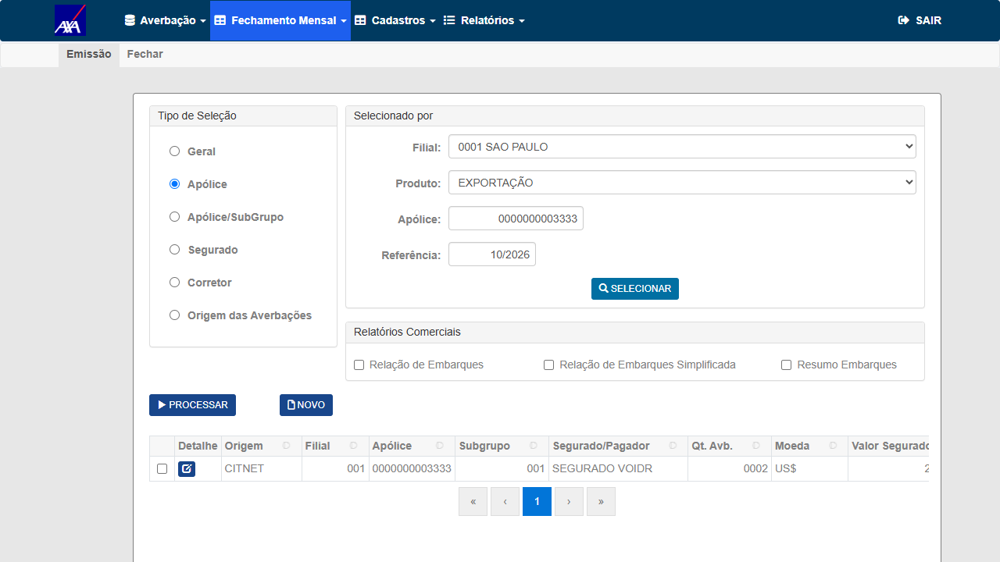
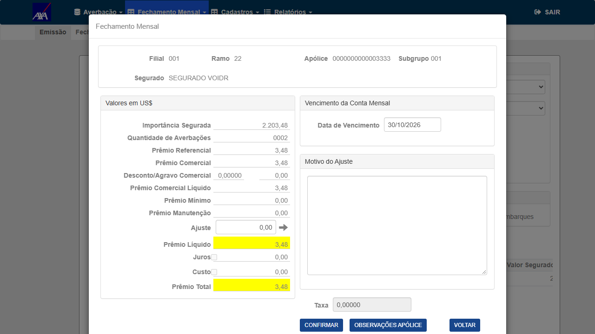
Pré-condições
- Entrega com controle por data confirmado (mecânica documentada pelo dev: onde a data de corte vive e como parametrizá-la em HML).
- IOF > 0 cadastrado (7,38%); massa ramo 54 com averbações em duas competências — uma anterior e uma posterior à data de corte configurada.
Passos
- Configurar/confirmar a data de corte no HML (conforme a mecânica entregue).
- Emitir fechamento de competência anterior à data de corte → conferir que o IOF é calculado/exibido (comportamento anterior preservado).
- Emitir fechamento de competência igual/posterior à data de corte → conferir ausência do IOF no cálculo e na tela.
Resultado esperado
- O comportamento muda exatamente na data de corte: antes dela o IOF segue cobrado; a partir dela, não — sem recálculo das competências anteriores.
i_iof_cme='S' e a emissão saiu com IOF 0 (o parâmetro global governa); o restante do mapa (telas CITNET, prévia) fica cobrado ao dev no resultado. (ii) Amostragem de tenant: build publicada em AIG/AXA/STARR/TOKIO HML; execução em AXA (tenant auditado no Gate 2); branches *_fix seguem com o comportamento antigo (relevante p/ regressivo). (iii) Aviso operacional para produção: fechar as competências ≤ 12/2026 ANTES de zerar o IOF (tb_iof_cit sem vigência). (iv) Divergência dev×medição: tb_hst_cit não é populada na emissão (ver CT-IOF-014).6. Matriz de Rastreabilidade
| Critério de aceite (funcionais) | CT(s) | Resultado |
|---|---|---|
| CA-F1 — A partir de 01/01/2027, nenhum ramo abrangido inclui IOF no cálculo do prêmio | CT-IOF-007, 008, 009, 010, 011, 015, 016 | Atendido com ressalvas — 007/008/009/015 APROVADOS; 010 APROVADO com limitação (modal com defeito legado — Bug #9215; critério verificado pela resposta do servidor); 011 REPROVADO (HTTP 500 na via normal — Task #9214; cálculo correto e persistência provada pela via especial); 016 N/A |
| CA-F2 — Campos e opções de IOF deixam de ser apresentados nos fluxos abrangidos | CT-IOF-004, 005, 007, 008, 009, 010, 015 | Atendido — todos APROVADOS (010: grid sem IOF e view do servidor com a linha de IOF oculta; o modal não abre por defeito legado — Bug #9215) |
| CA-F3 — IOF não somado ao prêmio total nem cobrado na fatura | CT-IOF-011, 013 | Atendido em parte — documento sem IOF (013 APROVADO); 011 REPROVADO: cálculo correto no modal e persistência provada pela via especial, mas a via normal (Processar) retorna HTTP 500 — Task #9214 |
| CA-F4 — Integrações continuam recebendo o campo IOF com valor zero | CT-IOF-014 | Atendido — tb_cme_cit.v_iof = 0.0 gravado (zero, não NULL); integrações não alteradas nesta entrega (N/A) |
| CA-F5 — Faturas/fechamentos anteriores preservam os valores de IOF registrados | CT-IOF-012 | Atendido — histórico 05/2026 preservado (banco e reimpressão com IOF 0,30) |
| CA-F6 — Mudança vale para os fechamentos de todos os ramos (Nacional e Internacional) | CT-IOF-007–010 (Nacional, ramo 54) + CT-IOF-015 (Internacional) | Atendido por amostragem (AXA HML; parâmetro é global por tenant) |
| Mecanismo do card — Tabelas aceita IOF 0,00; Customização desmarca e bloqueia "Cobrar IOF" | CT-IOF-001, 002, 003, 004, 005, 006 | Atendido — 001/002/004/005/006 APROVADOS; 003 APROVADO pelo contrato v1.0 (campo vazio normalizado para 0,00, sem erro de servidor); a intenção (vazio ≡ 0 ou bloqueio) está pendente de Produtos, sem defeito |
| CAs técnicos (DoD de engenharia: unit tests, Sonar, 2 aprovadores, staging) | Sem CT — processo, enforçado por branch policy + DoD do dev, fora da homologação | N/A |
8. Riscos
| # | Risco | Prob. | Impacto | Mitigação |
|---|---|---|---|---|
| R1 | Mecânica da data de corte (01/01/2027) indefinida — parametrizável × fixa × operacional (zerar IOF manualmente). O modelo atual não tem vigência (tb_iof_cit sem data). | Alta | Médio | Grupo 7 condicional; confirmar no Gate 2 e na entrega. Os grupos 1–6 cobrem o card nas duas hipóteses. |
| R2 | IOF em Tabelas é config GLOBAL do tenant — zerar afeta outros testes no AXA HML durante a execução. | Média | Médio | Rodada em janela única, baseline registrada, restauração a 7,38% no CT-IOF-006 (último da rodada de Tabelas). |
| R3 | Campo vazio × 0,00 sem definição no card (a validação atual "Informar o Percentual de IOF." vale para os dois?). | Média | Baixo | CT-IOF-003 registra o comportamento entregue (vazio normalizado para 0,00 e gravado — risco de zerar o IOF global por engano). Pendente de Produtos: a intenção NÃO foi decidida no Gate 2 (o contrato v1.0 aprovado aceita “validar ou normalizar”); escalada ao trio (coordenação, Produtos e a dev responsável) em 16/10/2026, sem bloquear o card — se Produtos exigir o bloqueio do vazio, o CT-IOF-003 reabre e vira defeito. |
| R4 | "Todos os ramos" homologado por amostragem (ramo 54 Nacional + Internacional) — a Customização é por ramo/produto (8 ramos no combo). | Média | Médio | O parâmetro IOF é único por tenant; a amostragem cobre os dois módulos de fechamento. Se Produtos exigir todos os ramos no Gate 2, ampliar os grupos 2–3 por ramo. |
| R5 | O IOF aparece em mais pontos do sistema (flags por apólice tb_apo_nac_cit.i_iof_cme / tb_apo_int_cit.i_iof_cme, telas CITNET, prévia tb_ctl_env_prv.v_iof) — a tarefa de dev "mapear todos os pontos" pode ampliar o escopo entregue. | Média | Médio | Ao sair a entrega (tasks de dev), reconciliar o mapeamento do dev com este plano e atualizar antes do Gate 2/execução. |
| R6 | Integrações externas que recebem IOF (ex.: WSFatura AXA, tb_brz_cit_fatura) sem lista fechada no card. | Média | Médio | CT-IOF-014 cobre os registros canônicos; integrações específicas entram quando o dev listar o que foi alterado. |